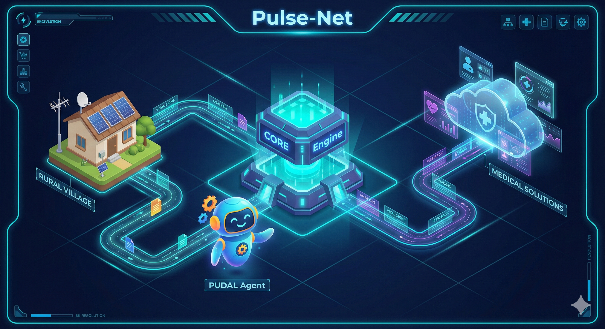

UAS-3 My Innovations

Judul: Pulse-Net: Arsitektur “Teater Kerja” Kesehatan Berbasis TISE 2.0
Inovasi saya, Pulse-Net, bukan sekadar aplikasi telemedisin biasa. Ini adalah perwujudan radikal dari paradigma Triune-Intelligence Smart Engineering (TISE) 2.0. Jika TISE 1.0 hanya berfokus pada otomatisasi tugas, TISE 2.0 dalam Pulse-Net bertujuan untuk Pemberdayaan Agensi.
Tujuannya spesifik: Mengubah 4,5 miliar manusia yang saat ini menjadi “objek penderita” dalam sistem kesehatan, menjadi Protagonis-Penulis yang memiliki kendali penuh atas narasi kesehatan tubuh mereka.
Untuk mewujudkan ini, saya merancang “Teater Kerja” (Work Theater) digital yang beroperasi di dalam Sub-Ruang PSKVE 6. Berikut adalah detail arsitektur teknisnya:
1. Lingkungan: The Health Work Theater
Dalam konsep Pulse-Net, “rumah sakit” bukan lagi gedung fisik, melainkan sebuah Teater Kerja Terdesentralisasi. Ini adalah lingkungan digital-fisik (Cyber-Physical System) tempat terjadinya ko-kreasi nilai kesehatan. Teater ini memfasilitasi orkestrasi tugas yang kompleks antara pasien (di desa), data medis (di cloud), dan tenaga ahli (di kota), menjembatani kesenjangan antara Titik A (Kondisi Sakit/Berisiko) menuju Titik B (Kondisi Sehat/Terkendali). Lingkungan ini dirancang untuk meminimalkan entropi (kekacauan/kebingungan) yang sering dialami pasien miskin saat mencari pengobatan.
2. Stasion: Transducer Nilai PSKVE
Dalam perjalanan dari Titik A ke Titik B, terdapat “Stasion” fungsional tempat energi diubah menjadi nilai nyata:
- Sense Station (Stasiun A - Input): Di sini, Human Energon (keluhan rasa sakit, suhu tubuh, detak jantung) ditangkap. Stasiun ini bukan loket pendaftaran, tapi sensor IoT atau antarmuka input sederhana di ponsel yang mentransduksi gejala fisik menjadi Data Digital.
- Heal Station (Stasiun B - Output): Ini adalah titik terminasi. Di sini, Knowledge Energon (algoritma medis) dikonversi kembali menjadi Service Energon (instruksi perawatan, resep digital, atau pengiriman drone obat) yang dapat langsung dieksekusi oleh pasien.
3. Kendaraan: Agen Otonom “Dr. Saku” (PSA - PUDAL)
Untuk bergerak antar stasion, pasien membutuhkan kendaraan yang cerdas. Saya menciptakan Agen Pemecah Masalah (Problem Solving Agent - PSA) 8 bernama “Dr. Saku”. Berbeda dengan chatbot statis, Dr. Saku memiliki arsitektur kognitif PUDAL yang dinamis:
- P - Perceive (Persepsi): Agen membaca input multi-modal (teks keluhan, foto luka, data sensor detak jantung) secara real-time.
- U - Understand (Pemahaman): Agen menggunakan Large Language Models (LLM) yang dikalibrasi medis untuk memahami konteks lokal (misal: membedakan demam biasa vs gejala malaria endemik setempat).
- D - Decide (Keputusan): Agen melakukan Triase Logis. Apakah ini butuh Human Intervention segera? Apakah cukup Self-Care? Keputusan ini berbasis protokol medis ketat untuk menjaga keselamatan.
- A - Act (Tindakan): Agen mengeksekusi keputusan: memberikan panduan P3K, menghubungi ambulans desa, atau menjadwalkan telekonsultasi.
- L - Learning (Pembelajaran): Agen mengevaluasi hasil tindakan (Feedback Loop). Jika pasien membaik, pola ini disimpan sebagai Lesson Learned untuk kasus serupa di masa depan.
4. Jaringan Rute: Siklus 7-Langkah Pemecahan Masalah
Agen Dr. Saku tidak bergerak sembarangan. Ia terikat pada Siklus 7-Langkah Pemecahan Masalah 8 sebagai protokol keselamatan standar: 1. Identifikasi: Mendeteksi anomali (misal: lonjakan suhu tubuh anak). 2. Picu (Trigger): Mengirim sinyal waspada ke orang tua/pasien. 3. Kejadian (Event): Membuka sesi konsultasi (interaksi PUDAL dimulai). 4. Baca STATUS: Menganalisis data vital terkini secara komprehensif. 5. Evaluasi: Membandingkan data dengan baseline kesehatan normal pasien. 6. Adaptasi: Menyesuaikan rekomendasi (jika obat A tidak mempan, saran obat B). 7. Selesai (Lesson Learned): Menutup kasus dan mengarsipkan data ke rekam medis elektronik.
5. Teknologi: CORE Engine (Mesin Energon)
Jantung mekanis dari Pulse-Net adalah CORE Engine 5. Ini adalah mesin konseptual yang mengelola efisiensi energi sistem. Dalam sistem kesehatan konvensional, energinya boros (biaya tinggi, antrean lama). CORE Engine Pulse-Net bekerja dengan siklus: * Input: Data kesehatan masif dari populasi. * Encode: Mengubah data menjadi pola risiko (Risk Pattern). * Decode: Menerjemahkan pola menjadi intervensi preventif yang murah. * Output: Value Energon berupa kesehatan masyarakat yang terjaga dengan biaya minimal.
Mesin ini memastikan bahwa Human Energon (tenaga dokter) yang terbatas tidak habis untuk hal administratif, tetapi difokuskan sepenuhnya untuk keputusan krusial yang membutuhkan empati Homocordium.
Kesimpulan Arsitektur
Inovasi Pulse-Net adalah sebuah orkestrasi full-stack: Dimulai dari Riset Medis (Bahan Bakar), diproses oleh CORE Engine (Transducer), dikendarai oleh Agen PUDAL Dr. Saku (Kecerdasan), melintasi Rute 7-Langkah, di dalam Teater Kerja Digital, demi satu tujuan mulia: Memberdayakan setiap manusia untuk menjadi tuan atas tubuhnya sendiri.
✨ End of UAS-3 “My Innovations” – Sirojul Firdaus ✨